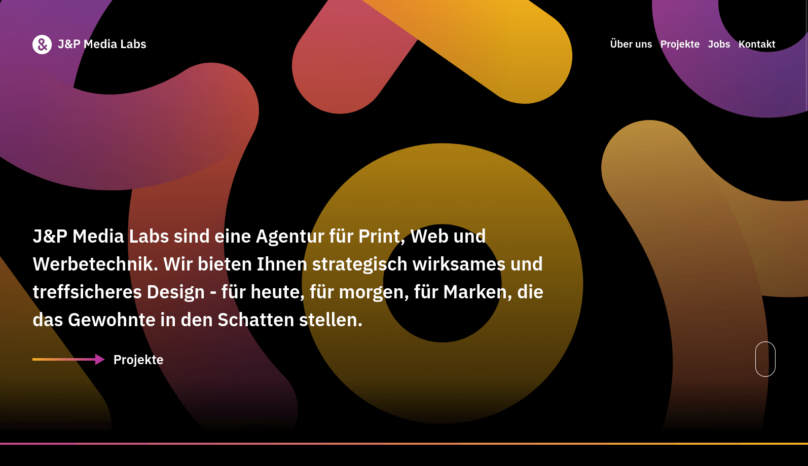

J&P Media Labs: Crafting a Digital Presence with Cutting-Edge Web Technologies
For J&P Media Labs, a dynamic advertising agency, I developed a sleek and intuitive website leveraging the power of Vue.js and Nuxt for a seamless, single-page application experience. By integrating Directus as the headless CMS, I enabled the team to manage content effortlessly, resulting in a robust, maintainable, and user-friendly website that truly represents the innovative spirit of J&P Media Labs. This project showcased my ability to translate creative visions into digital realities through sophisticated web development techniques.
